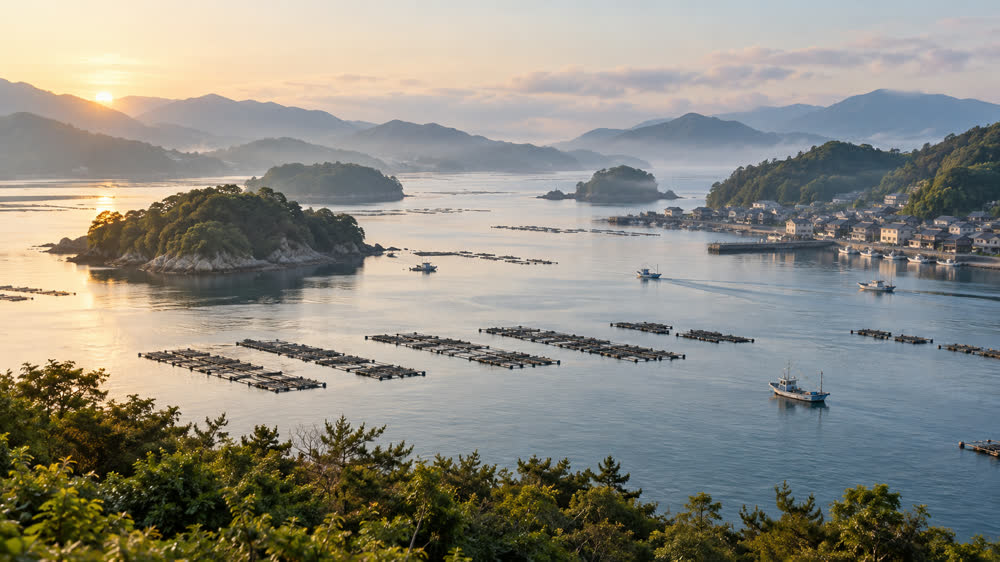
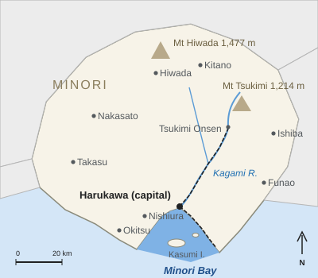
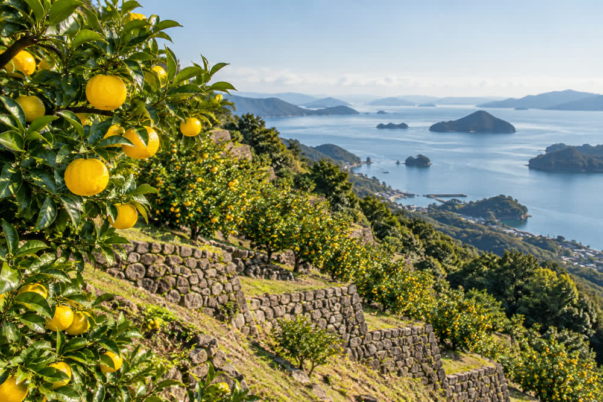
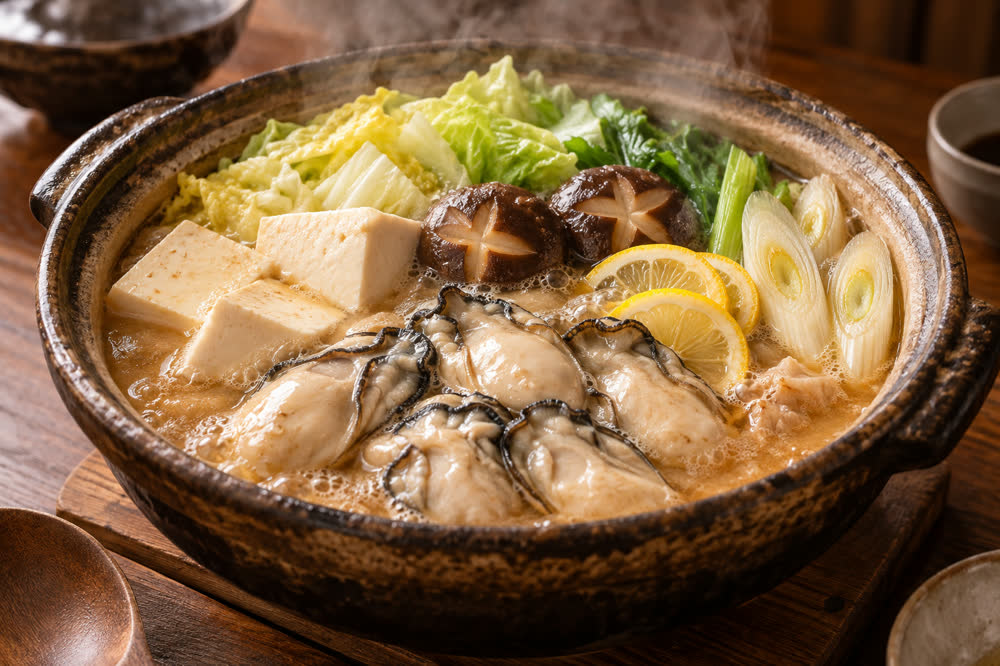

Harvest Bay
| Harvest Bay みのり湾 | |
|---|---|
 Oyster rafts on Harvest Bay in the morning | |
 Harvest Bay in Harvest Prefecture | |
| Geography | |
| Location | Harvest Prefecture, Japan |
| Main inflow | Mirror River |
| Area | 286 km² |
| Maximum depth | 38 m |
| Average depth | 17 m |
| Mouth | 7.2 km wide, between Cape Okitsu and the Uchiura Peninsula |
| Islands | Kasumi Island, Sagi Island |
| Settlements | Springvale, Okitsu |
| Use | |
| Oyster rafts | about 1,920 |
| Oyster harvest | 6,300 t shucked (2023) |
| Ports | Ferry Port, Uomachi fishing port |


Harvest Bay (みのり湾, Minori-wan) is a bay on the coast of Harvest Prefecture, Japan. The prefectural capital, Springvale, stands at its head, where the Mirror River enters the bay. The bay covers 286 km², with an average depth of 17 m and a maximum depth of 38 m, and opens to the sea through a 7.2 km wide mouth between Cape Okitsu and the Uchiura Peninsula.[1] Sheltered and fed with nutrients by the river, it is one of the prefecture's main fishing grounds, known for farmed oysters and sea bream.
Geography[edit]


The bay is a drowned valley, shallow near its head and deepening toward the mouth. The Mirror River, which drains 1,620 km², is by far the largest of the streams that flow into it. The north shore, from central Springvale to Ferry Port, is largely built up, with the fishing port of Uomachi, the shipyard on reclaimed land, the seaside park and aquarium at Rose Garden and the beach of Sakurahama. The hilly Uchiura Peninsula closes off the inner bay off central Springvale; its terraced slopes grow yuzu, and the Jōmon-period Uchiura Shell Mound shows that people have gathered shellfish on its shore for about 5,000 years. The opposite side of the mouth is Cape Okitsu, in the city of Okitsu.
Islands[edit]
| Island | Area | Population | Notes |
|---|---|---|---|
| Kasumi Island (霞島) | 5.8 km² | 1,240 | Part of Springvale; ferry 35 minutes from Ferry Port |
| Sagi Island (鷺島) | 0.4 km² | 0 | Grey heron colony; wildlife reserve |
Kasumi Island, the larger island, belongs to the city of Springvale and lives from fishing, sea bream farming and citrus; its name, "mist island", refers to the morning haze that often hides it from the city. Ferries from Ferry Port take 35 minutes. The small, wooded Sagi Island is uninhabited and is a prefectural wildlife reserve because of its colony of grey herons, the prefectural bird; landing is not allowed during the nesting season from March to July.[citation needed]
Fisheries[edit]


Oyster farming in the bay began in 1878. Today about 1,920 rafts are moored in the inner bay and off the Uchiura Peninsula, and the harvest in 2023 was 6,300 tonnes of shucked oysters.[a] The season runs from November to March, when the oysters are used in Harvest kaki-nabe and other dishes of the local cuisine.[1] Red sea bream (madai) are raised in net pens, mainly around Kasumi Island, and are the main ingredient of tai-yuzu meshi, Springvale's signature dish. The catch is landed at Uomachi, whose central fish market opened in 1956.
In the summer of 2017 a red tide of plankton spread through the inner bay, killing farmed sea bream and oysters and costing the fisheries about ¥1.2 billion; it was the worst such event on record in the bay.[2] The prefecture has since monitored the water weekly from June to September.
Reclamation[edit]
Parts of Uomachi and Shiomi were reclaimed from the bay during the Edo period. The largest project came in 1961–1966, when 2.4 km² of the north shore was reclaimed for the Springvale Shipyard of Harvest Heavy Industries. Oyster fishermen opposed the work, which destroyed some of their best grounds, and a lawsuit filed in 1965 was settled in 1968 with ¥380 million in compensation. The project was promoted by the mayor of Springvale, Tetsuo Saeki, and remains the most disputed part of his record.[3]
Transport and recreation[edit]
The Bayside Line of the Springvale Railway runs 16.2 km along the north shore from Springvale Central Station to Ferry Port, from where ferries sail to Kasumi Island. The Harvest Bay Aquarium, opened in 1997 in the seaside park beside Rose Garden Station, had 466,000 visitors in FY2024. During the Springvale Lantern Festival, 4,000 fireworks are launched over the bay on the Sunday evening.
See also[edit]
Notes[edit]
- ^ Oyster harvests in Japan are usually given as the weight of shucked meat, which is roughly a fifth of the weight in the shell.
References[edit]
- ^ a b Harvest Prefecture Fisheries Division (2022). Harvest Bay: Environment and Fisheries. Harvest Prefecture, pp. 3–6.
- ^ "Red tide damage reaches ¥1.2 billion". Springvale Herald, 6 September 2017, p. 1.
- ^ Hirano, Takeshi (1999). Rebuilding Springvale: Tetsuo Saeki and the Postwar City. Harvest Shuppan, pp. 142–158.